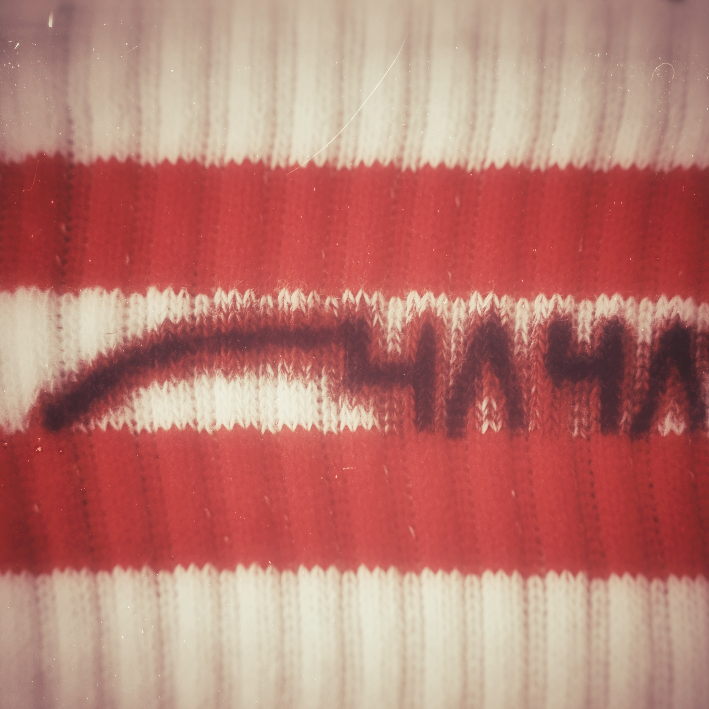

Comeback
Ty P musigdichter
Im bärner nordä geborä u ufgwachsä het säch Ty P scho vo afang a vom Rap distanziert. Er würd
säch niemaus us rapper bezeichnä, wägdäm het er ä eigetä begriff für sis musig da si
erfundä. Er isch dr musigdichter. Utopisch het sini reis us musiker agfangä, doch es si viu
hindernis i wäg cho. Vo depressionä bis psychosä het er vieles durchläbt u wimä hüt o merkt
überstandä. Er het sis läbä ändläch widr im griff u isch fully a sim aubum drannä. Bliibet
gspannt uf
me u begleitet Ty P uf sirä reis iz utopischä land.

Dr erscht artiku im DW Magazin. Baud chunnt aubum, baud chunnt es konzert vo 4stung. Es aubum
mit
viunä features. Us erschtes ufem aubum isch Porcukor, sie isch mini fründin. U da chunnt o
scho
dr sonny, mit sim melancholischä rap. Liebi für liebi so startet dkolaboration vom
Oberdiesbacher Un210known. N!vel der Kollege von neben an. Breitsch 1314. Toujour leitet es
neues kapitu i mit sonny de boy. Es folgt Shouré, wieder mit N!vel. Die Beiden von neben an.
Sencillo usem dorf, mitem atzäsuff im hingerhof. Er seit schwiizrap tönt mies wag. Der
Ateragizman beendet das "musigdichter mixtape" passend.
Release
Mundart Release DJ
Willst du wissen was in der Mundart Szene jede Woche so gedropt wird? Dann abonniere jetzt unsere
Playlist auf Spotify und gib ihr einen Like. Die Playlist wird jeden Freitag von unserem MR DJ
mit den Releases der letzten Woche geupdated. Verpasse so auch du keinen einzigen Mundart
Release
mehr.
Analyse
Textanalyse kafi u saruch
Der Text beginnt unmittelbar mit einem imperativischen Aufruf, der die Handlung in Gang
setzt:"chum mer fahrä wäg / mit dim autä BMW / irgendwo us bärn"Hier wird der Kontrast zwischen
Heimat und Sehnsuchtsort etabliert. Bern dient als Ausgangspunkt (Realität), der verlassen
werden soll. Das Symbol des „autä BMW“ steht dabei für Unabhängigkeit, Nostalgie und eine
gewisse charmante Bescheidenheit – es geht nicht um Luxus, sondern um das gemeinsame
Erlebnis.Das Ziel ist ein romantisierter Ort:"chliines dörfli am meer" Dies ist ein klassischer
Topos (literarisches Motiv) des Eskapismus. Das Meer steht für Grenzenlosigkeit und
Freiheit.Gefolgt wird dies von einer Metapher der absoluten Hingabe: "schänkä dir mis härz". Der
Satz "ohni di machiis nur haub ä so gärn" ist eine bewusste Untertreibung (Litotes-ähnlich), die
in der Schweizer Mundart typisch ist, um eine eigentlich sehr tiefe emotionale Abhängigkeit
("Ich kann ohne dich nicht glücklich sein") bodenständig und nicht zu kitschig auszudrücken.
Interview
Chico Chicago Interview
Der Rapper aus dem 13er Quartier ist 'ne Schmacht für deine Augen. Auch nur heute hat er an der
Lorrainä Chiubi gezeigt, wer der Prophet Berns ist. Hier findest du ein qualitatives
Beispiel-Interview mit Chico Chicago. Exklusiv hier.
Interview
"Mundart ist ehrlicher" – Black Sea Dahu im Gespräch
Warum die Wahl der Sprache beim Songwriting den ganzen Vibe eines Tracks verändert.
History
Die Evolution des Schweizer Hip-Hop
Von den Anfängen in den 90ern bis zu den heutigen Autotune-Tracks. Wie sich die Szene gewandelt
hat und welche Crews den Weg geebnet haben.
International
Nemos ESC-Erfolg: Was bedeutet das für die Schweizer Szene?
Ein Sieg, der über die Landesgrenzen hinausstrahlt. Öffnet dies Türen für andere nationale Acts?
Release
Neue EP "drü für drü" veröffentlicht
Ein spannendes neues Maturaarbeit-Projekt zeigt, wie professionell der Nachwuchs heute
produziert.
Kultur
Das Vinyl-Revival in der Schweizer Mundart-Szene
Warum immer mehr lokale Künstler ihre Alben wieder auf Schallplatte pressen lassen.
Tech
Die Apple Music API für Mundart-Katalogisierung nutzen
Ein Blick hinter die Kulissen: Wie Plattformen Metadaten bereinigen und lokale Genres besser
abbilden können.